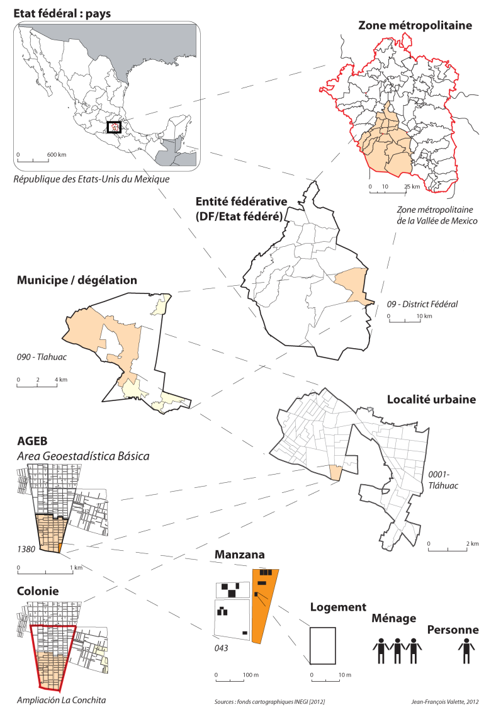

INTRODUCTION
Mégapole macro-céphalique par ses dimensions, métropole d’ordres national et mondial concentrant les fonctions de commandement et d’organisation économiques et logistiques du pays, également siège des institutions politiques, et pôle majeur en termes d’offre culturelle et universitaire du Mexique dont elle est la capitale, Mexico dispose d’un poids écrasant sur son territoire national.
Au sens administratif du terme, Ciudad de Mexico correspond en réalité uniquement au « District Fédéral », siège des pouvoirs fédéraux, et compte 9 millions d’habitants.
Mais son agglomération dépasse largement cette limite en s’étendant vers les Etats fédérés limitrophes de Mexico et d’Hidalgo, pour former la « Zone Urbaine de la Vallée de Mexico » : la ZMVM.
De fait, au sein d’un système urbain plutôt déséquilibré en sa faveur, l’aire métropolitaine de Mexico, avec ses 22 millions d’habitants, pèse 18% de la population du pays, et représente 25% du PIB mexicain [1].
Or en dépit de cette concentration de l’activité et de son dynamisme économique qui, outre ses orientations sociétales et politiques progressistes, la distinguent du reste du pays, la ZMVM n’en demeure pas moins un miroir du Mexique, le reflet d’une société inégalitaire, traversée par de fortes tensions sociales : en 2000, plus de 60% des actifs de l’agglomération gagnaient 200 euros par mois [2] ; et en 2010, 40% de sa population ne bénéficiait d’aucune couverture sociale, malgré les programmes sociaux étatiques [3]. Dans certaines municipalités périphériques, cette proportion s’élève à plus des deux tiers de la population [4].
Si l’agglomération reste épargnée par les règlements de compte entre groupes de narcotrafiquants qui endeuillent le pays depuis plusieurs décennies, l’insécurité y est élevée malgré l’importante présence policière. Son contexte demeure marqué par une forte délinquance : selon les chiffres du bureau du Procureur général de justice du District Fédéral, le taux de délits rapportés aux autorités a quasiment doublé entre 1990 et 1998, passant de 1412 à 2951 pour 100 000 habitants [2], et l’on y recense 65000 vols et 2000 homicides par an (dont 40% ne sont pas déclarés) [1].
Si l’agglomération reste épargnée par les règlements de compte entre groupes de narcotrafiquants qui endeuillent le pays depuis plusieurs décennies, l’insécurité y est élevée malgré l’importante présence policière. Son contexte demeure marqué par une forte délinquance : selon les chiffres du bureau du Procureur général de justice du District Fédéral, le taux de délits rapportés aux autorités a quasiment doublé entre 1990 et 1998, passant de 1412 à 2951 pour 100 000 habitants [2], et l’on y recense 65000 vols et 2000 homicides par an (dont 40% ne sont pas déclarés) [1].
Peut-on, en somme, établir et démontrer, pour le périmètre de l’aire métropolitaine de Mexico, un lien entre conditions de précarité et faits criminels ? C’est l’objet de la présente étude.
I. DONNÉES
La conduite de notre projet s’est appuyée sur trois jeux de données :
I.1. Données spatiales
Il s’agit des shapefiles correspondant aux différents échelons du découpage administratif en vigueur au Mexique (localidad, municipe…), et aux unités statistiques (ageb, manzanas) élaborées par l’Instituto Nacional de Estadistica y Geografia (l’Institut national de statistiques et de géographie du Mexique), ou INEGI.
Créé en 1983, l’INEGI est un organisme public autonome chargé de réglementer et de coordonner le système national d’information statistique et géographique. Il réalise tous les dix ans des recensements de la population et publie mensuellement des statistiques économiques.
Pour rappel, notre aire d’étude est la ZMVM, unité statistique de l’INEGI. Indisponible sur le site de l’institut, nous avons construit cette couche à partir des échelons précités.
Découpage administratif du Méxique
I.2. Données socio-démographiques
Elles se répartissent en 9 fichiers Excel, mis à disposition par ce même INEGI, et sont issues du recensement décennal de 2020. Elles sont regroupées au sein de deux bases :
- La base « Personas » et « Viviendas », dite « échantillon détaillé », portant information des personnes et des logements (correspondant aux ménages) ; une clé fait le lien entre les individus constitutifs d’un ménage.
- La base dite « agrégée » fournit les mêmes informations, mais transformées et agrégées aux différents échelons géographiques, et par tranche d’âge.
D’un point de vue structurel, chaque observation y est décrite par un volume conséquent de variables (près d’une centaine pour chacun des recensements) regroupées au sein d’ensembles thématiques :
- Caractéristiques du logement occupé (niveau d’équipement, accès aux TIC, composition du foyer et structure des revenus…),
- Des personnes (niveau d’étude, activité, travail, mobilités, couverture sociale, statut marital…),
- Alimentation,
- Finances,
- Religion,
- Etc.
I.3. Données criminalité
Enfin, les données relatives au fait criminel, qui se situent en fait dans le prolongement des données sociodémographiques.
Notre réflexion sur ce matériau, dans le cadre du Mexique, s’est appuyée sur le site elcri.men [5], réalisé par M. Diego Valle-Jones.
Le data scientist mexicain y croise les données du Secretariado Ejecutivo del Sistema Nacional de Seguridad Publica – Secrétariat Exécutif du Système National de Sécurité Publique - (SESNSP), et celles de l’INEGI sur la totalité des municipes du Mexique, selon une typologie de crimes, et à travers une présentation statistique de leur évolution. L’intérêt de sa démarche réside dans le recul critique qu’il adopte vis-à-vis des données officielles.
Il a inspiré nos recherches bibliographiques et nous a orientés vers les données que nous évoquerons à la rubrique « Exploitation des données de criminalité : choix des variables ».
Mais auparavant, posons cette brève définition de la criminalité dans le Droit français : elle est l’ensemble des actes illégaux, délictueux et criminels, commis dans un milieu donné, à une époque donnée, et correspond à la transgression des normes juridiques d’un système social [6].
La notion de crime, et donc de criminalité, relèvent par conséquent d’une norme à la fois objective et subjective. Aussi, afin d’éviter les généralisations abusives relevant de notre propre système normatif et culturel, et suivant les recommandations de M. Valette, nous avons choisi d’exploiter les deux jeux suivants:
a. La base de données « Crime »
Établie par M. Valette, elle recense, sur les trois dernières décennies, le nombre annuel d’homicides et de féminicides, ainsi que la population totale par genre et par municipalité. Elle prend sa source à l’INEGI et se présente au format Excel.
b. Les données gouvernementales
Elles proviennent du SESNSP, sous forme de fichiers Excel annuels, consolidés lors de leur mise à jour [7]. La fréquence des crimes y est renseignée mensuellement, pour chaque municipalité de l’agglomération, et leur description répond à une typologie détaillée. Ainsi, 40 types de crime sont recensés, et chacun d’eux y est catégorisé par :
- La nature du préjudice subi : atteinte aux biens, atteinte à l’intégrité corporelle, violences familiales, etc.
- Son type : homicide, séquestration, extorsion, braquage, vol, droit commun, etc.
- Un sous-type : volontaire/involontaire, lieu du crime, etc.
- Sa modalité : arme blanche/arme à feu, avec/sans violence, véhiculé ou non, etc.
Nos analyses se sont préalablement appuyées sur cette catégorisation.
II. CADRES GÉOGRAPHIQUE ET CHRONOLOGIQUE DE L’ÉTUDE
Elle porte sur la Zone métropolitaine de la vallée de Mexico, pour l’année 2020 (dernier recensement en date établi par l’INEGI), à l’échelle des Municipes (équivalent des communes françaises en termes de superficie).
Ce choix repose sur la disponibilité des données, cet échelon étant le plus fin et le plus documenté dans les données criminelles à notre disposition.
Composée de trois entités fédératives – Mexico, le District Fédéral et Hidalgo -, la ZMVM compte 76 municipes.
Précisons enfin que les données « Crime » utilisées sont celles de 2019, soit un an avant l’épidémie de Covid, afin de disposer d’une photographie qui ne soit pas altérée par le caractère exceptionnel de la situation sanitaire de 2020.

III. TECHNOLOGIES EMPLOYÉES
Notre travail couvrant à la fois les aspects de documentation et de développement, de récupération et de traitement de données, de production et de représentation de l’information, dans le cadre d’une gestion de projet, nous nous sommes appuyés sur les technologies suivantes :
IV. EXPLOITATION DES DONNÉES
IV.1. Données socio-démographiques: choix des variables
Nous avons choisi dans l’exploration des données socio-démographiques de nous focaliser sur la géographie de la précarité. Ce choix prend sa source dans nos recherches sur la criminalité, qui indiquent un lien entre précarité et criminalité. Ainsi, préalablement au choix de nos variables dans les bases étendues et agrégées, on s’est attaché à définir notre thématique de précarité.
a. Définition de la précarité
« État, caractère de ce qui est précaire. » [8] [9]
Au regard de cette définition peu éclairante, il nous a paru opportun d’approcher le terme par trois synonymes (proposés par le Larousse et le Petit Robert), plus expressifs :
- o L’instabilité, qui s’oppose à la stabilité d’une situation. On entend ici que la pauvreté ne peut être considérée comme un critère de précarité à elle seule. Suivant cette idée, un individu disposant d’un revenu faible mais stable, bénéficie d’une situation moins précaire qu’un individu disposant d’un salaire plus élevé, mais soumis à des aléas de santé, financiers, etc. ;
- o La fragilité désigne l’incapacité ou la faible capacité d’un individu à résister à cet aléa. Ici, cette fragilité peut être d’ordre économique comme sanitaire ;
- o L’incertitude, enfin, est liée à cette notion de fragilité. Outre la difficulté de répondre à une situation difficile, elle convoque l’incapacité d’anticiper les événements et donc de savoir comment y répondre lorsque ceux-ci surviennent.
Dans son article « Construire un indicateur de précarité : les étapes d’une démarche empirique », où la notion ne comptait pour synonymes que l’instabilité et la fragilité, André Villeneuve notait en 1984 : « Les deux sens sont bien distincts, mais non opposés : l’instabilité implique des hauts et des bas, et les bas sont a priori des occasions de fragilité » [10].
De fait, la précarité ne repose pas uniquement sur la pauvreté. Celle-ci en est une composante, mais ne l’explique pas entièrement. En conséquence, elle ne constituera pas le facteur déterminant de notre étude.
b. Élaboration d’un indice de précarité
C’est donc à partir de cette conception de la précarité que nous avons envisagé la construction d’un indice (de cette précarité), sur la base des données socio-démographiques de l’INEGI.
La littérature consultée fait état de biais et de malfaçons que nous avons essayé d’éviter dans notre démarche, inédite pour les membres de notre groupe.
Afin de ne pas s’enfermer dans une thématique de la précarité en particulier, notre travail a donc consisté, à partir des 350 variables de l’INEGI, à composer un bouquet cohérent de variables issues de diverses thématiques, avec pour objectif d’en étudier l’éventuelle porosité/contagiosité.
Aussi, les critères retenus pour sélectionner les variables les plus représentatives possibles ont reposé sur :
- Une fréquence significative (ce qui est le cas des variables de l’INEGI) ;
- - Une corrélation forte avec d’autres variables issues de chacune des thématiques des données fournies par l’Institut.
Enfin, nous avons décidé de conserver uniquement les données que nous estimions objectives. Ce critère exclut de fait certaines variables qui, de prime abord, semblaient intéressantes. Par exemple : « les interrogés considèrent-ils manger à leur faim ou non ?».
Nos variables choisies parmi ces thématiques pour l’indice de précarité sont regroupées dans le schéma ci-dessous.
IV.2. Données de criminalité : choix des variables
Nous nous sommes affranchis de la granularité très fine des données publiées par le gouvernement mexicain (préjudice > type > sous-type > modalité) en nous arrêtant aux types seuls pour nous concentrer sur une palette plus générique.
Ainsi, après une étude de leur distribution, nous avons choisi de conserver tout type dont la part est supérieure à 5% du total de la criminalité.
Outre ces variables, et après discussion avec M. Valette, nous avons retenu des données ayant une part moindre, mais socialement et culturellement intégrées à la notion de criminalité au Mexique.
Nous obtenons donc des variables hétérogènes dans leur sens et leur niveau de violence (contravention vs homicide, par exemple), et sur lesquelles nous n’avons pas opéré de distinction. Certains résultats étant particulièrement significatifs : le vol, par exemple, représente 43,5% du total de la criminalité.
Bibliographie
[4] A. Ribardière et B. Tallet, Atlas Mégapoles : Mexico, Autrement, Éd., 2011.
[5] Site elcri.men par D. Valle-Jones.
[7] Gobierno de Mexico, «Datos Abiertos de Incidencia Delictiva,» 2022.
[8] Larousse, «Définitions : précarité - Dictionnaire de français Larousse,» 2022.
[9] Le Robert, «précarité - Définitions, synonymes, conjugaison, exemples,» 2022.
[10] A. Villeneuve, « Construire un indicateur de précarité : les étapes d'une démarche empirique,» Économie et Statistique, pp. 93-105, Juillet-Août 1984.